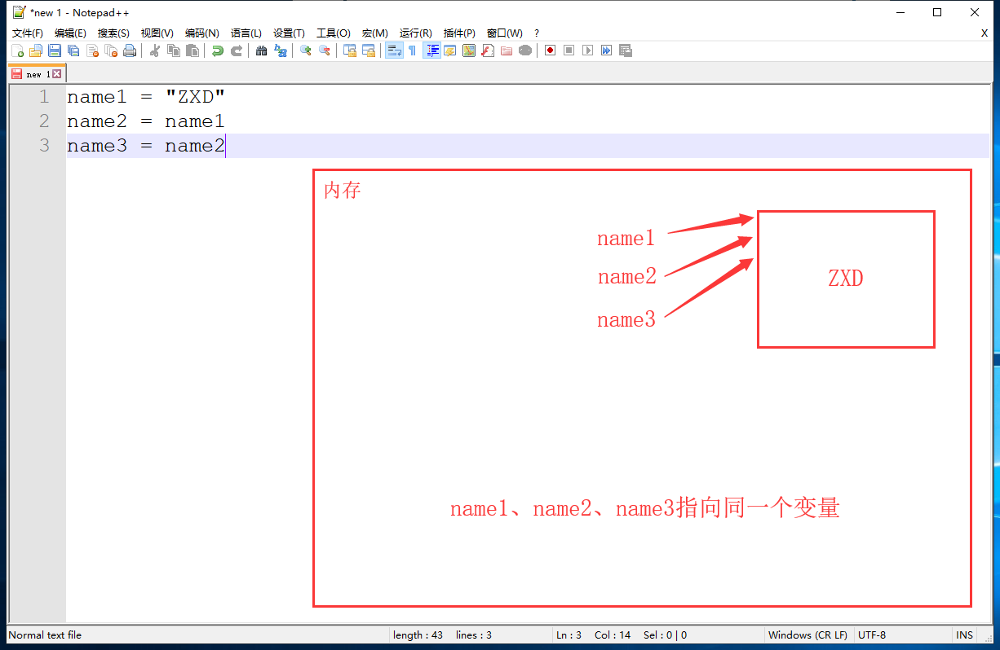

由数字、字母、下划线组成
不能以数字开头
不能使用python内置的关键字
| False | def | if | raise | None |
|---|---|---|---|---|
| del | import | return | True | elif |
| in | try | and | else | is |
| while | as | except | lambda | with |
| assert | finally | nonlocal | yield | break |
| for | not | pass | class | from |
| or | global | continue |
要有可描述性、要有意义
要区分大小写
不要使用中文、拼音
不要有空格
推荐使用两种命名方式
定义一个变量时内存的变化
name = "ZXD"
# name:变量名
# =:赋值
# "ZXD":值(数据)变量赋值给其他变量时内存的变化
name1 = "ZXD"
name2 = name1
name3 = name2
更该变量值时内存的变化
name1 = "ZXD"
name2 = name1
name3 = name2
name1 = "老污郭"
name3 = "美丽的冰冰"人的身份证号
人的出生、死亡日期
圆周率
......
ID = 100000000000000000
DEATH_DATE = "1970.01.01"
PI = 3.1415926单行注释（当行注释）
# 此部分内容为注释内容
# 此部分内容为注释内容
# 此部分内容为注释内容多行注释
"""
鹅鹅鹅，
曲项用刀割。
拔毛加瓢水，
点火盖上锅.
"""计算：
| + | 加 |
|---|---|
| - | 减 |
| ***** | 乘 |
| / | 除 |
a = 10
b = 5
n1 = a + b # 15
n2 = a - b # 5
n3 = a * b # 50
n4 = a / b # 2.0比较
| > | 大于 |
|---|---|
| < | 小于 |
| == | 等于 |
a = 10
b = 5
print(a > b) # True
print(a < b) # False
print(a == b) # False"+" 拼接
a = "老郭"
b = "真TM能开车"
c = 666
print(a + b) # 老郭真TM能开车
print(a + b + c) # TypeError: must be str, not int
"*" 拼接
a = "坚强"
print(a * 10) # 坚强坚强坚强坚强坚强坚强坚强坚强坚强坚强
真：True
假：False
a = 10
b = 5
print(a > b) # True
print(a < b) # False
程序员输入提示性语句
获取用户输入
获取的所有数据都为字符串类型
res = input("请输入内容：")
# 用户界面显示——请输入内容：
# 程序员获取用户输入的内容——res
模拟QQ登录
user = input("QQ账号：")
pwd = input("QQ密码：")
print(user, pwd) # 打印用户输入的user和pwd
模拟需求：获取用户输入的数字的五倍
num = int(input("请输入数字："))
print(num * 5) # 打印用户输入数字的五倍
type()：查看数据的类型
a = 123
b = "123"
print(type(a)) # <class 'int'> 整型
print(type(b)) # <class 'str'> 字符型
int(str)：转换为整型，字符串内容必须全部都是数字
str(int)：转换为字符型
a = "123"
b = 666
n1 = int(a)
n2 = str(b)
print(type(n1), type(n2)) # <class 'int'> <class 'str'>
格式
if 条件：
结果
举例
if 5 > 3:
print("老污郭")
格式
if 条件：
结果
else:
结果
举例
if 5 < 10:
print("郭老师是个好人！")
else:
prnt("老污郭")
格式
if 条件：
结果
elif 条件：
结果
elif 条件：
结果
举例
if 5 > 10:
print("郭老师是个好人")
elif 3 > 9:
print("郭老师真是个好人！")
elif 7 > 1:
print("老污郭")
格式
if 条件：
结果
elif 条件：
结果
elif 条件：
结果
else:
结果
举例
if 5 > 7:
print("郭老师真棒")
elif 5 > 2:
print("老污郭")
elif 4 > 1:
print("郭老师特别正直")
else:
print("正义阳光郭")
格式
if 条件：
if 条件：
结果
举例
sex = "女"
age = "58"
if sex == "女":
if age < 25 and age > 18:
print("很高兴遇见你，进来做做~")
elif age > 55:
print("郭老师等你好久了，快去找他！")
else：
print("哼呼呼，嗯我睡着了。")
格式
if 条件：
结果
if 条件：
结果
if 条件：
结果
举例
if 5 > 4:
print("京城开车郭！")
if 2 > 1:
print("黑山老污郭！")
if 8 > 3:
print("郭老师喜欢高龄妇女！")